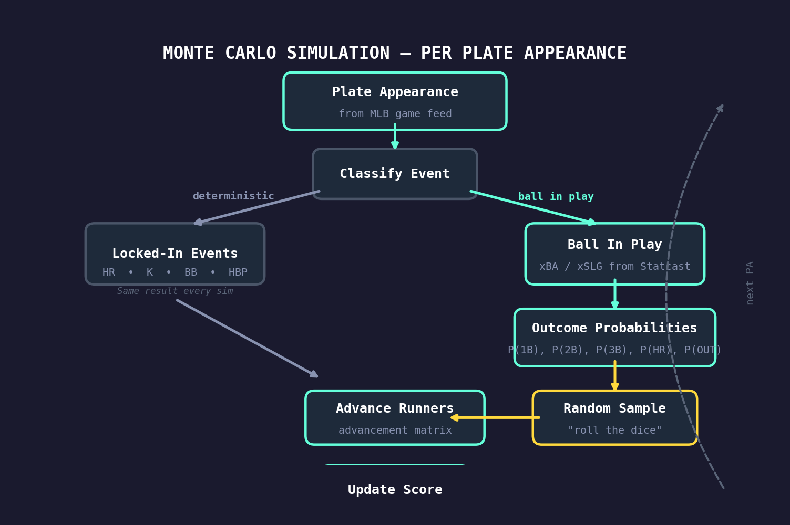
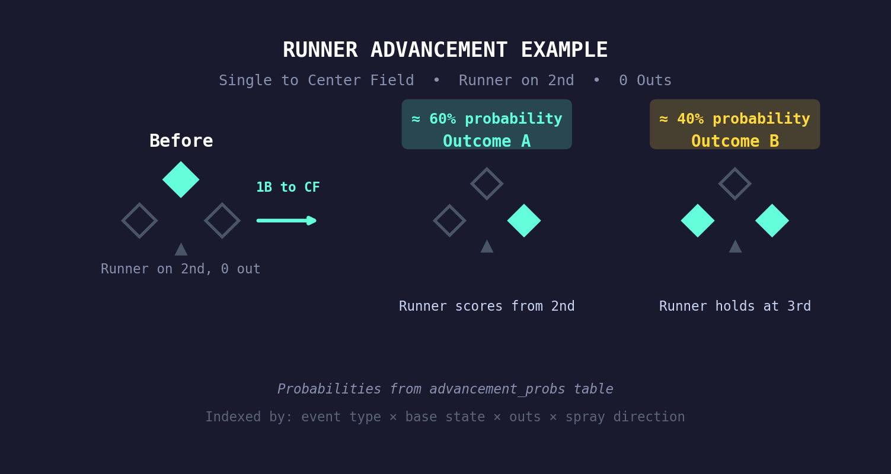
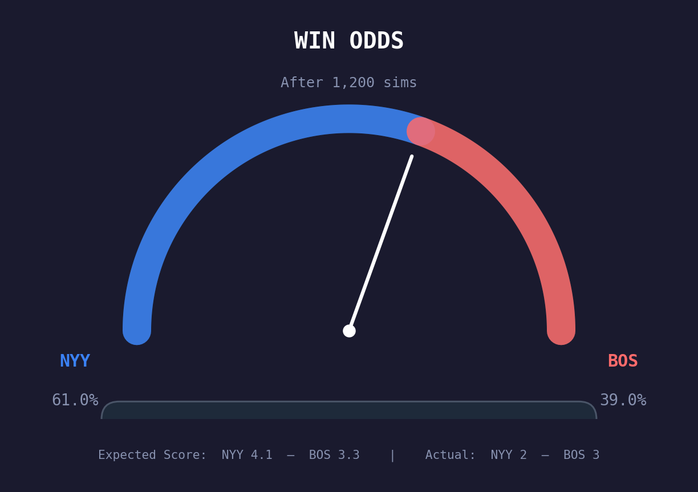

Who Should Have
Won the Game?
Baseball is a game of small samples. A bloop single finds grass. A 108-mph line drive is hit right at someone. Over a full season, these things even out. Over a single game, they can determine the winner.
The Analytics tab on every Basenerd game page answers a simple question: based on the quality of contact in this game, which team should have won? The tool behind that answer is a Monte Carlo simulation that replays every ball in play hundreds of times, using Statcast’s expected batting average (xBA) and expected slugging (xSLG) instead of actual outcomes.
What Is a Monte Carlo Simulation?
A Monte Carlo simulation is a technique for understanding uncertainty by running the same scenario thousands of times with randomized inputs and observing the distribution of results.
The name comes from the famous casino in Monaco – the idea is that if you “roll the dice” enough times, the average outcome converges on the true expected value. In finance, Monte Carlo methods price options. In physics, they model particle interactions. In baseball, they tell us what should have happened.
The key insight is that a single game is just one sample from a distribution. A team can hit the ball hard all night and lose. Monte Carlo simulation lets us see the full distribution of outcomes that quality of contact should have produced.
How the Basenerd Simulation Works
Our simulator replays every plate appearance from the actual game. For each PA, it classifies the event into one of several categories and handles each differently:
Deterministic Events
Some outcomes aren’t random – they happen the same way every time you replay the game:
- Home runs – the ball left the yard, period. Every simulation counts the same HR with the same runners scoring.
- Strikeouts – the batter didn’t put the ball in play. No contact quality to re-evaluate.
- Walks and HBPs – the pitcher missed the zone (or hit the batter). Runners advance via force rules identically each time.
These events are “locked in” across all simulations. They’re not subject to re-randomization because there’s no batted-ball luck involved.
Stochastic Events: Balls in Play
This is where the simulation does its work. Every ball in play has Statcast data attached to it: exit velocity, launch angle, spray angle, and crucially, xBA and xSLG – the expected batting average and expected slugging percentage based on how hard and at what angle the ball was hit.

For each ball in play, we:
1. Convert xBA/xSLG into an outcome probability distribution
The xBA tells us the probability that the ball in play becomes a hit. The xSLG, combined with xBA, tells us the expected power of that hit. From these two numbers, we derive the probability of each outcome:
- P(out) = 1 − xBA
- P(hit) = xBA, distributed among singles, doubles, triples, and home runs based on the ratio of xSLG to xBA
For example, a 102-mph line drive at 18° launch angle might have an xBA of .720 and xSLG of 1.300. That translates to roughly: 28% out, 42% single, 19% double, 2% triple, 9% homer. A weak grounder with xBA of .150 and xSLG of .160 would be: 85% out, 14.5% single, 0.5% double.
2. Sample a random outcome from that distribution
This is the “Monte Carlo” step. Each simulation randomly draws an outcome – out, single, double, triple, or HR – weighted by the probabilities above. A ball with .720 xBA will be a hit in about 72% of simulations and an out in about 28%.
3. Advance runners using a real advancement matrix
Once we know the outcome (say, a single), we need to figure out what happens to any baserunners. Do they advance one base? Two? Score?
We don’t guess. We use an advancement probability matrix built from historical Statcast data stored in our database. This matrix maps every combination of:
- Event type (single, double, ground ball out, fly ball out, etc.)
- Base state (which bases are occupied, encoded as a bitmask: 1=first, 2=second, 4=third)
- Number of outs
- Spray direction (pull, center, opposite field)
…to a probability distribution over outcomes (new base state, runs scored, outs added). For example, “single with runner on second, 1 out, ball hit to center field” has a specific probability of the runner scoring vs. holding at third, derived from thousands of real plays.

4. Track runs, hits, and score across all simulations
Each simulation produces a final score. After hundreds of simulations, we have a distribution of outcomes.
From Simulations to Win Probability
After running 600–1,500 simulations (more for final games, fewer for in-progress ones), we aggregate:
- Win probability: The percentage of simulations each team wins. If the away team wins 580 out of 1,000 sims, their expected win probability is 58%.
- Expected score: The average runs scored by each team across all simulations.
- Expected linescore: Average expected runs per inning, so you can see which innings “should” have been bigger or smaller.
- Expected box score: Per-player expected hits and total bases, based on each batter’s actual xBA/xSLG on their balls in play.

What the Analytics Tab Shows You
When you open the Analytics tab on any game page, you’ll see several components powered by this simulation:
Win Odds Gauge
The semicircular gauge at the top shows each team’s Monte Carlo win probability. If the needle sits at 65% away, it means the away team – based purely on the quality of contact in the game – “should” have won 65% of the time. When the actual winner matches the expected winner, the game played out as expected. When they diverge, luck played a significant role.
Expected vs. Actual Linescore
This table shows the actual runs scored per inning alongside the Monte Carlo expected runs. A big gap in any inning highlights where luck (or unluck) was concentrated. Maybe the team scored 4 runs in the third on a bunch of bloop hits (xR would be lower), or maybe they went scoreless despite three hard-hit balls (xR would be higher).
Expected Runs Per Inning Chart
A line chart comparing expected runs per inning for both teams. This visualization makes it easy to spot the key innings where the game’s outcome diverged from what the contact quality suggested.
Expected Box Scores
Per-batter expected hits (xH) and expected total bases (xTB), derived from each player’s actual balls in play. A hitter who went 0-for-4 but hit three balls with xBA > .500 will show up here as “expected 1.5+ hits” – he got unlucky. A hitter who went 3-for-4 on soft contact will show expected hits well below 3.
Batted Ball Spray Maps
Side-by-side spray charts for both teams showing every ball in play, color-coded by result. Hover over any dot to see exit velocity, launch angle, distance, xBA, and xSLG. These maps give you the raw data behind the simulation – you can visually see the hard-hit balls that found gloves and the weak ones that found holes.
A Worked Example
Imagine a game where the final score is 3–2, home team wins. But the Monte Carlo says the away team should have won 61% of the time with an expected score of 4.1–3.3. What happened?
Looking at the expected linescore, you might see:
- 5th inning: Away team’s expected runs = 1.82, actual = 0. Three balls in play with xBA > .400 were caught – two line drives at fielders and a deep fly ball tracked down at the wall.
- 7th inning: Home team’s expected runs = 0.35, actual = 2. Two bloop singles (xBA .190 and .220) fell in, then an error extended the inning.
The away team hit the ball harder, put the ball in play with higher expected outcomes, but lost. Over a 162-game season, these things even out. In this single game, the home team caught the breaks.
Why This Matters
For fans: It adds a layer of understanding beyond the box score. “We hit the ball hard and lost” isn’t just a feeling anymore – it’s quantifiable.
For analysts: It separates process from results. A team that consistently has positive expected score differentials (xR > actual R against them, xR < actual R for them) is likely due for regression. A team overperforming its contact quality is riding luck.
For evaluating pitchers and hitters: A pitcher who allows a lot of hard contact but posts a low ERA is living on borrowed time. A hitter producing high xBA/xSLG but low actual results is getting unlucky and likely to bounce back.
Under the Hood: Technical Details
For those interested in the implementation details:
- Simulation count: 600 sims for in-progress games (speed matters), 1,500 for final games (accuracy matters). Results are cached to avoid re-computation.
- Base state encoding: Runners are represented as a 3-bit integer (bitmask). Bit 0 = runner on first, bit 1 = runner on second, bit 2 = runner on third. So bases loaded = 7 (binary 111), runner on second only = 2 (binary 010).
- Advancement matrix source: Built from the
advancement_probstable in our PostgreSQL database, which contains probabilities derived from historical Statcast play-by-play data covering every combination of event type, base state, outs, and spray direction. - Spray direction bucketing: Balls in play are classified into pull (spray angle < −15°), center (−15° to +15°), and opposite field (> +15°). This matters because runner advancement probabilities differ significantly by spray direction – a single to right field (pull for a righty) advances runners differently than a single to left.
- Tie handling: Since extra innings aren’t modeled in the replay (we only simulate the actual innings played), ties are split 50/50 as half-wins. These are rare since the simulation samples from real plate appearances that almost always produce distinct scores.
- Random seed: Each game uses a fixed seed (42) for reproducibility. The same game will always produce the same Monte Carlo result, which makes the analytics cacheable and comparable.
Methodology
The Monte Carlo simulation replays every plate appearance from the MLB Stats API game feed. Home runs, strikeouts, walks, and HBPs are treated as deterministic. Balls in play are re-simulated using Statcast xBA and xSLG to derive per-PA outcome probabilities.
Runner advancement uses a probability matrix built from historical Statcast data, indexed by event type, base state, outs, and spray direction. The simulation runs 600–1,500 iterations per game, producing win probabilities, expected scores, expected linescores, and per-batter expected box scores.
All code and data behind this analysis are part of the Basenerd analytics platform.